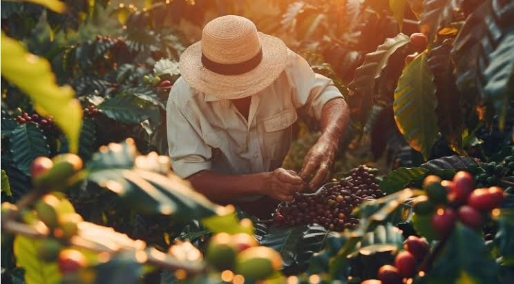
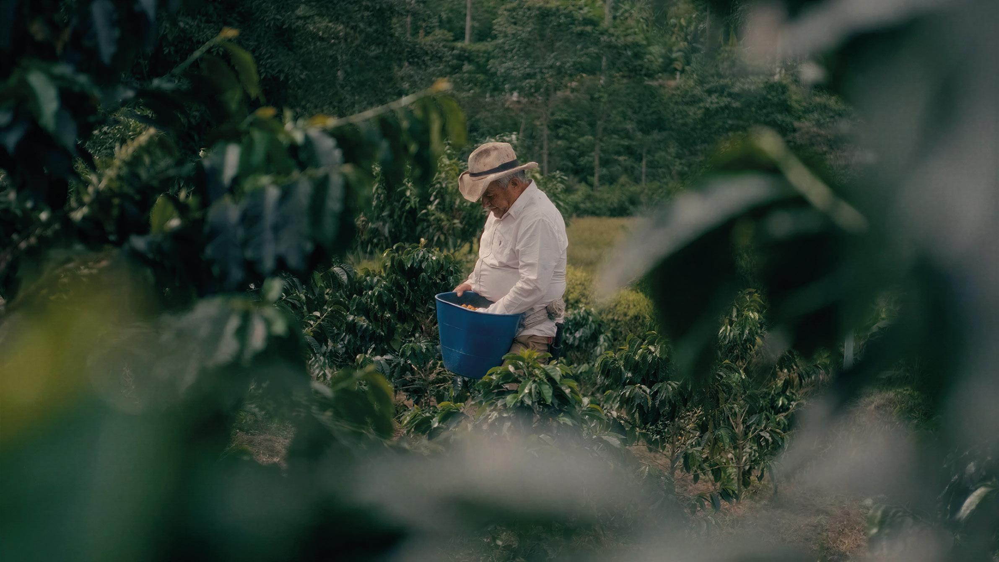
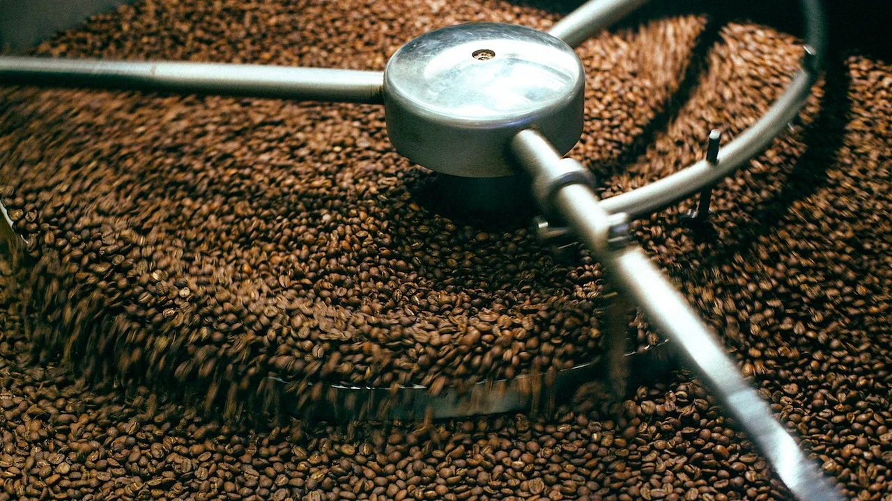
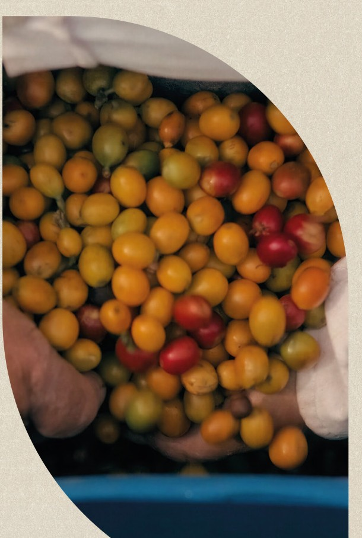

Na Dama Cafés, o café não é apenas o nosso negócio; é o fio que costura nossa história de geração em geração. O que começou no silêncio acolhedor do campo, no trato diário e respeitoso com a terra, floresceu em uma estrutura robusta e moderna, pronta para levar a essência do café brasileiro de alta qualidade para o mercado nacional e internacional. Unimos a sabedoria da tradição à precisão do amanhã.
O segredo do nosso padrão de excelência está no equilíbrio. Honramos o conhecimento transmitido por nossos antepassados e o potencializamos com tecnologia de ponta, entregando não apenas regularidade física e operacional, mas a certeza de que cada grão carrega a alma de um cultivo feito com respeito e precisão técnica.


Para nós, a excelência é uma jornada sem atalhos. Somos guardiões de todo o caminho: do primeiro broto no campo ao controle rigoroso da torra e do envase. Esse cuidado minucioso assegura que a consistência e a assinatura sensorial da Dama Cafés cheguem intactas ao paladar do seu cliente final.
Dama Cafés. Tradição que atravessa gerações. Qualidade que fortalece grandes parcerias.
A paixão que nasce na lavoura encontra sua máxima expressão em nosso moderno parque industrial. Projetado para atender aos mais rigorosos padrões nacionais e internacionais de produtividade, segurança alimentar e qualidade, nossa planta reúne automação de ponta e tecnologia de última geração.
Nosso controle de qualidade começa muito antes da torra: inspecionamos cada lote de café cru com classificações físicas e avaliações sensoriais detalhadas. Durante o processo produtivo, monitoramos em tempo real curva de torra, moagem, granulometria, densidade, umidade e a vedação hermética das embalagens.
Com alta capacidade fabril, atendemos grandes redes varejistas, distribuidores, mercado corporativo, food service e projetos sob medida de Marca Própria (Private Label).
Saiba mais sobre terceirização

Para a Dama Cafés, a excelência não é uma meta; é a nossa assinatura. Nosso portfólio orgulhosamente integra o Programa de Qualidade do Café (PQC) e carrega o Selo de Qualidade da ABIC (Associação Brasileira da Indústria de Café). Essas chancelas atestam, de forma independente, que cada lote que sai de nossa indústria cumpre os mais rigorosos padrões de pureza, identidade e padrão sensorial do mercado nacional.
Desde a rigorosa seleção na origem até as curvas milimétricas de torra e envase, cada detalhe é monitorado por especialistas focados em manter o perfil aromático e gustativo intocado.
Preencha o formulário ao lado e nossa equipe comercial retorna com uma proposta sob medida para revenda, distribuição, food service ou marca própria.